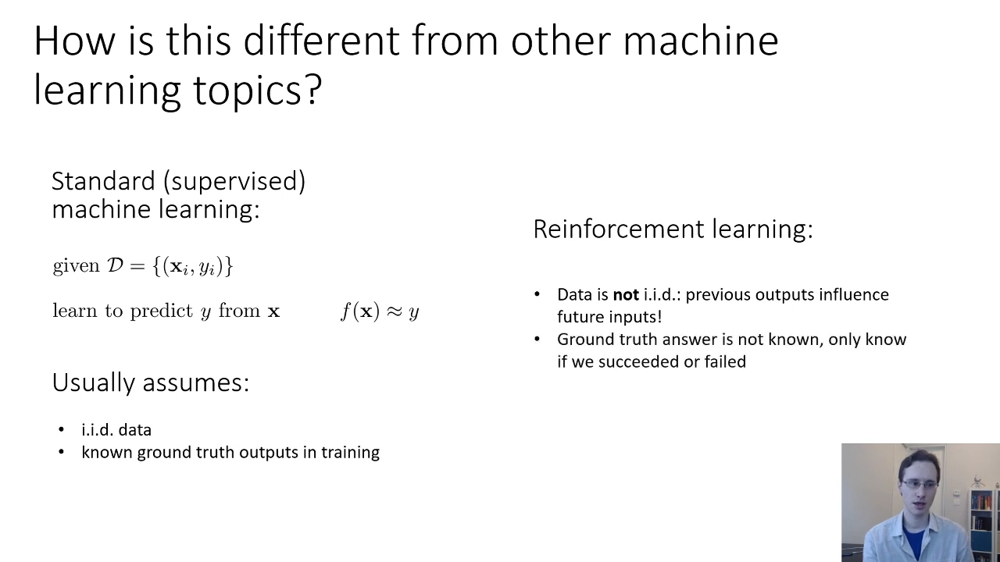
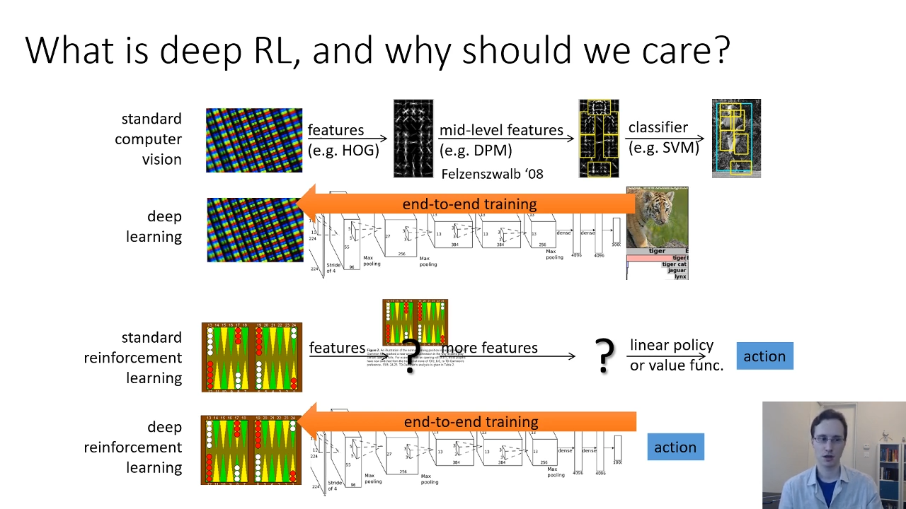
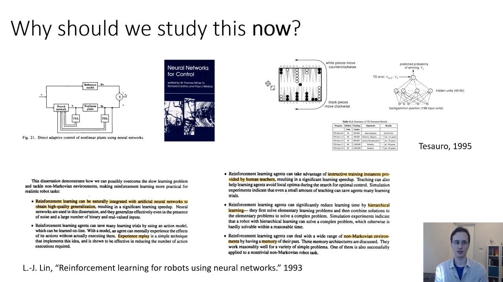
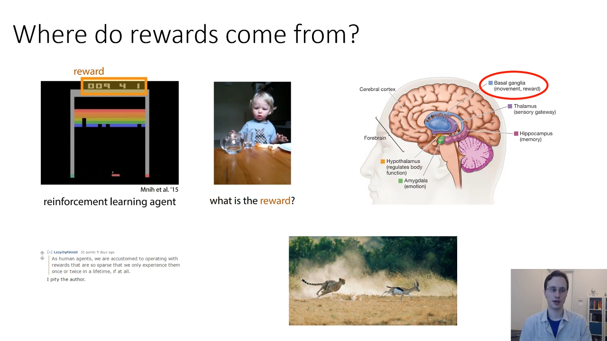
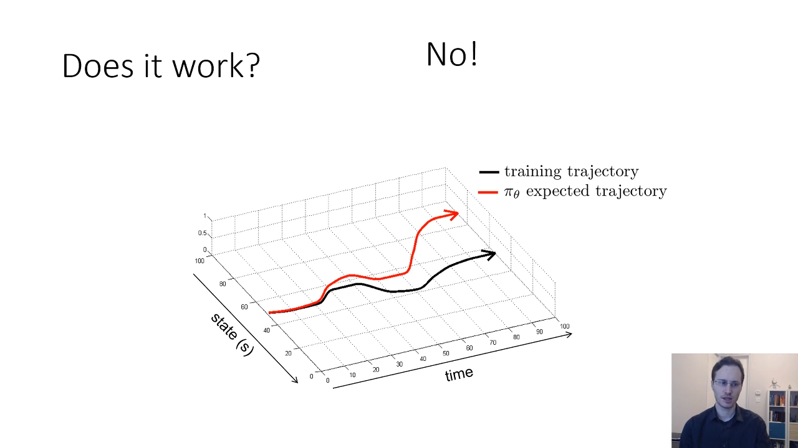
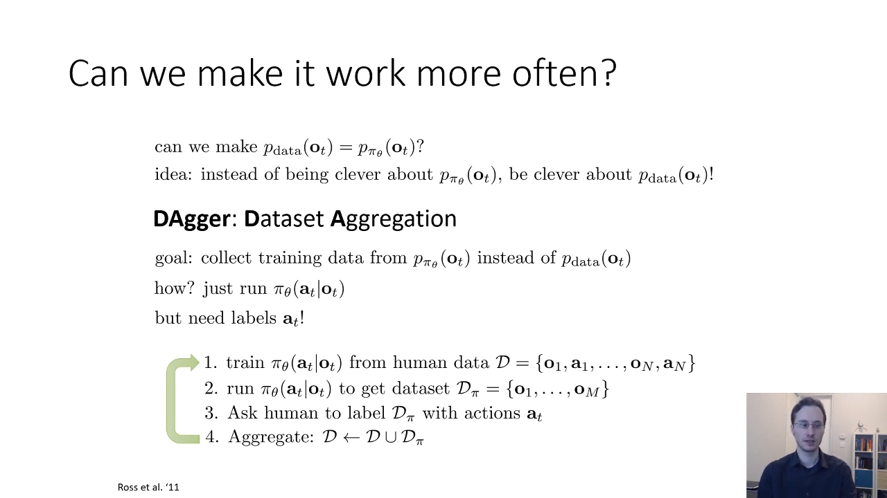

Deep Reinforcement Learning: CS 285 Fall 2021
Table of Contents
1. Lecture 1
2. L1P1: Introduction

Figure 1: How is RL different from other ML
RL is different
- because data is not i.i.d
- ground truth answer is not know
RL is not just for games and robots.
- traffic control (by Cathy Wu) 00:09:15
3. L1P2: Why Deep RL?
- because intelligent agents need to adapt 00:00:40
- deep learning helps us handle unstructured environment 00:02:19
- RL provides formalism for behavior 00:03:23

Figure 2: Deep RL allow End-to-End Learning
- Recognition part of problem and Control part of problem can work together 00:07:49
Why study this now? 00:12:03
- advancement in RL
- advancement in Deep Learning
- computation power

Figure 3: RL is not new
4. L1P3: Beyond learning from Reward
Maximizing rewards is not the only problem that matter for sequential decision making: 00:00:59
- Inverse RL: Learning Reward Functions from examples
- Transfer Learning, Meta-Learning: Transferring knowledge between domains
- Learning to predict and using prediction to act
00:03:13 Where do rewards come from?
As human agents, we are accustomed to operating with rewards that are so sparse that we only experience them once or twice in a lifetime, if at all.

Figure 4: Source of Rewards
Other form of supervision:
- Learning from demonstration
- Learning from observing the world
- Learning to predict (00:07:03 model based RL)
- Unsupervised learning
- Learning from other tasks
- Transfer learning
- Meta-learning: learning to learn
5. L1P4: How do we build intelligent machines?
Ideas
- Learning as basis of intelligence
- An algorithm for each "module" of brain? or a single flexible algorithm? 00:03:55
- Brain is flexible: Seeing with your tongue (humans can learn to see in some extend using tongue 00:04:38)
Some evidence in favour of deep learning
- DeepRL learns features simlar to found in brain for touch and vision 00:07:20
- RL is observed in brain (Basal gaglia ~= reward system) 00:08:00
- High proficiency in domains with simple rules (go, atari,)
- Learn simple skills with raw sensory inputs (robots,)
- Learn from imitating human provided expert behavior (driving,)
But, human are better
- can learn incredibly quickly,
- can reuse past knowledge
- not clear what the reward function should be
- not clear what the role of prediction should be 00:10:19
6. Lecture 2
6.1. L2P1: Supervised Learning of Behaviours
- In RL we deal with sequential decision making problems.
- We can predict action in place of the classes (as in supervised classification problem)
- st : state - markovian state
- ot : observation - can be incomplete
- 00:08:36 If you are using observation past observation may give you extra information because information is incomplete. And only state is markovian, observation need not be.
00:10:18 Imitation Learning or behavioral cloning
- ALVINN: Autonomous Land Vehicle In a Neural Network was one of the first imitation learning system for AV 00:12:32
- In general Imitation Learning doesn't work, although supervised learning works in other problem. This is because the policy can deviate slightly from training trajectory and then when in the new state it has higher chance of making more mistakes.

Figure 5: Problem with Imitation Learning
but after a lot of data, it 00:14:50 works. In this particular case (NVIDIA's autonomous driving) because of techniques used in training:
00:16:59 The general principle is to modify you training data to illustrate the mistakes and shows how to correct them, then the policy might learn to be more robust.
00:18:43 The problem with Imitation Learning is that the training data distribution is different from test distribution \(p_{\pi}(o_t)\) is different from \(p_{data}(o_t)\)
So, Can we make those distribution more close?
- Yes. If we make the policy perfect. But that's difficult.
Instead make the data distribution closer to test distribution.
DAgger: Dataset Aggregation 00:20:29: Collect training data from \(p_{\pi}(o_t)\)
- run the policy
- label the data
- train with aggregated data
- repeat
but still data labeling is difficult. Thus, this is also not seem much in practise.

Figure 6: DAgger: Dataset Aggregation
7. Links
L10P1 L10P2 L10P3 L10P4 L10P5 L11P1 L11P2 L11P3 L11P4 L11P5 L12P1 L12P2 L12P3 L12P4 L13P1 L13P2 L13P3 L13P4 L13P5 L13P6 L14P1 L14P2 L14P3 L14P4 L16P1 L16P2 L16P3 L16P4 L17P1 L17P2 L17P3 L18P1 L18P2 L18P3 L18P4 L19P1 L19P2 L19P3 L19P4 L19P5
L21P3 L21P4 L21P5 L22P1 L22P2 L22P3 L22P4 L22P5 L23P1 L23P2 L23P3 L4P1 L4P2 L4P3 L4P4 L4P5 L4P6 L5P1 L5P2 L5P3 L5P4 L5P5 L5P6 L6P1 L6P2 L6P3 L6P4 L6P5 L7P1 L7P2 L7P3 L7P4 L8P1 L8P2 L8P3 L8P4 L8P5 L8P6 L9P1 L9P2 L9P3